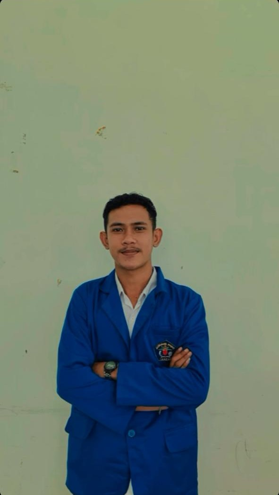
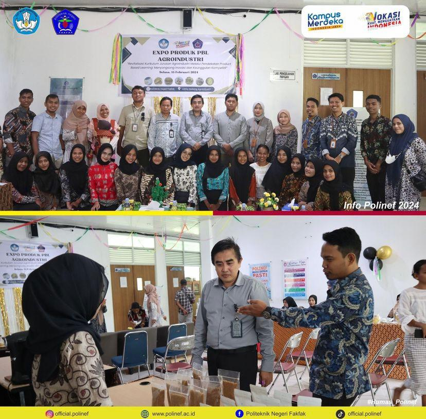

Ini adalah halaman beranda.
| FOTO | ||
|---|---|---|
|  | NAMA | : ARDIANSYAH RAMLI |
| NIM | : 163 23 079 | |
| JURUSAN | : DIII MANAJEMEN INFORMATIKA | |
| KELAS | : 1C | |
| KAMPUS | : POLITEKNIK NEGERI FAKFAK | |
| ASAL SEKOLAH | : MAN 4 MALUKU TENGAH | |
| JENIS KELAMIN | : LAKI-LAKI | |
| TEMPAT/TANGGAL LAHIR | : BANDA 07 N0VEMBER 2005 | |
| TINGGI BADAN/BERAT BADAN | : 163 CM/49 KG | |
| NAMA AYAH | : MOHTAR RAMLI | |
| NAMA IBU | : NURJANI LAABU | |
| ALAMAT | :JL.KAPTEN NAPITUPULU | |
| STATUS | : MAHASISWA | |
| NO HP | : 082290197517 | |
| GMAIL | : ardiansyaramli@gmail.com |
Ini adalah halaman audio dan video.
assalamualaikum warahmatullahi wabaratu, hallo semuanya Perkenalkan nama saya Ardiansya Ramli. Saya adalah mahasiswa di politeknik negeri Fakfak jurusan manajemen informatika.Saya menjalani pendidikan di polinef untuk mengembangkan kemampuan dalam bidang teknologi pemrograman.Saya tertarik dengan perkembangan teknologi saat ini.
Di era yang serba digital ini,sulit untuk bersaing tampa bantuan gadget yang memudahkan kita mendapatkan informasi,hiburan,dan media pembelajaran secara online.Oleh karena itu, saya memiliki ambisi besar untuk menjadi anak muda yang tidak gagap teknologi namun hobi ini memerlukan dana yang cukup besar.
Tidak perlu menjadi sesorang yang serba bisa, tekuni saja salah satu bidang yang paling kamu suka,kemudian jadilah seseorang yang hebat denganbidang tersebut.
Mahasiswa Politeknik negeri Fakfak Mengikuti Mata Kuliah Umum Bersama Pak Tatag Muttaqin,S.Sos.,M.Ed.,Ph. D.Dengan Tema "Mempersiapkan Sumber Daya Manusia Unggul Untuk Indonesia Emas 2024"
Fakfak, Februari 2024 sebagai bentuk implementasi pembelajaran PBL jurusan agroindustri,dilakukan expo produk. kegiatan ini dilakukan di lobi gedung agro industri polinef. expo ini menampilkan hasil hasil kreatif dan inofatif dari mahasiswa jurusan agroindustri yang telah menjalani pendekatan product based learning(PBL) dalam proses pembelajaran mereka.